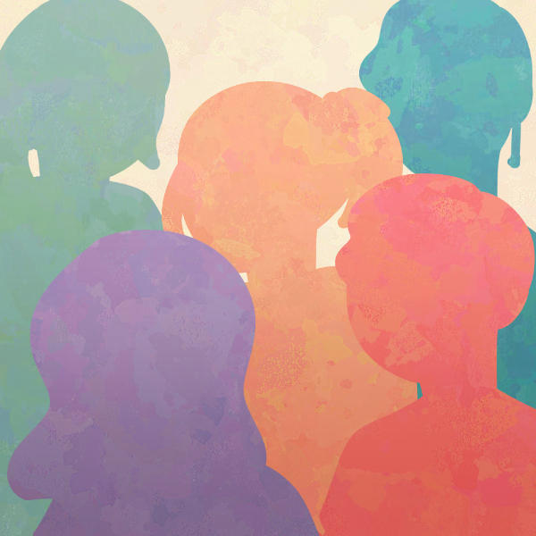

Neurodiversity
What Is It?
Humans are different. We have different sizes, genders, skin tones, voices, and more. We also have different minds. The diversity of human brains is called "neurodiversity."
Rethinking Neurodiversity
In the past, society viewed neurological differences as deficits. But lately, a new perspective is changing the world. More communities and workplaces are recognizing the largely untapped potential of neurodivergent people.
Not every different trait is a bad trait. For example, people with ADHD can be highly creative and autistic people can be detail-oriented. More people believe that diverse brains strengthen a community.
Embracing neurodiversity means including neurodivergent people. It doesn't mean ignoring the disabling aspects of certain conditions. Instead, it means finding work-arounds and recognizing the value of each person.